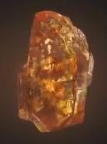
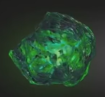
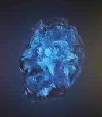
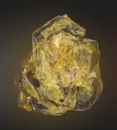
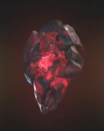
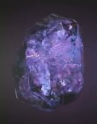

| Name | Color | Powers and capabilities | Image |
|---|---|---|---|
| Soul | Orange | Allows the user to steal, control, manipulate, and alter living and dead souls. |  |
| Time | Green | When wielded by someone having the necessary knowledge and skills, it appeared to be able to control the flow of time, be it on a small or massive scale, notably to turn back something to a previous state, to accelerate its time in order to apply changes that have not happened yet, or to lock it in a time loop, resetting its state until the wielder stops its effect. |  |
| Space | Blue | Allows the user to exist in any location; capability of controlling space itself. |  |
| Mind | Yellow | Allows the user to grant powerful mental abilities, like the power to subjugate the minds of others, bending them to the will of the user, as well as project the user's consciousness to a higher plane of existence. |  |
| Reality | Red | Allows the user to grant the ability to warp reality at will, granting that person immense strength, durability, powers, and subjective influence over the universe. |  |
| Power | Purple | Allows the user to increase physical abilities and allows to manipulate energy, which, when used at full potential, has enough power to obliterate an entire planet when unleashed. |  |
https://marvelcinematicuniverse.fandom.com/wiki/Infinity_Stones